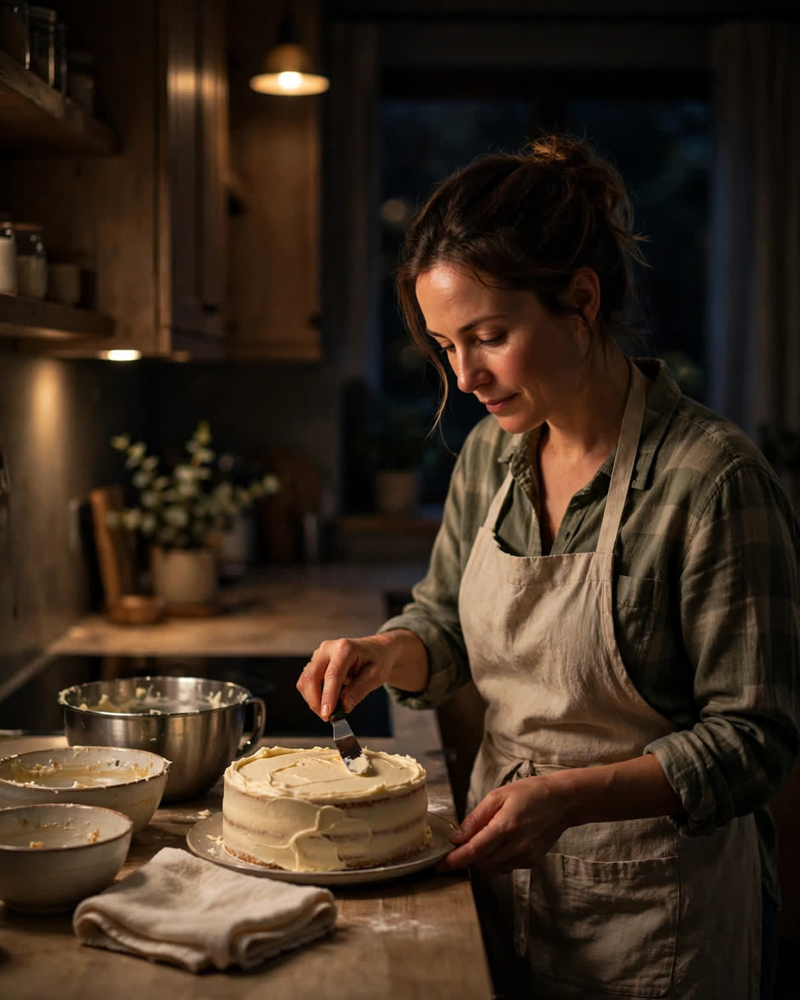

The Midnight Cake
A Clipp Kaili original story

My mother baked every birthday cake in our family at midnight, so the cake would be the first thing the day gave us.
She worked the overnight shift at the bakery plant for twenty-two years. Why would a woman who frosted four hundred cakes a week come home and bake more? We asked her that once. She just shrugged, tying her apron over her uniform.
"Theirs get sold," she said. "Yours get born at midnight."
The ritual never changed. At 11:40 on the night before a birthday, Mom came home from her shift smelling like sugar and cardboard, kissed the top of the birthday kid's head at the kitchen door, and sent us all to bed. Then, alone in a quiet kitchen, she baked. From scratch — no mixes. Chocolate for my brother. Lemon for me. Spice cake for Dad, who claimed not to like cake and ate two pieces standing at the counter every year.
By morning, the cake sat in the center of the table under a clean dish towel, with a note under the plate in her handwriting: "First thing. Love, Mom." We ate cake for breakfast on birthdays. Before school. Before presents. Before anything the day could do to us — good or bad — it gave us our mother's cake first.
I moved three states away at twenty-three and figured midnight cakes were a childhood thing, like believing she never slept. Then I turned twenty-four in a studio apartment with a mattress on the floor, and at 6 a.m. on my birthday, somebody knocked.
It was a courier. With a bakery box. Overnight shipping. Inside was a lemon cake, slightly lopsided from the trip, with a note under the plate.
"First thing. Love, Mom."
She had baked it at midnight in Ohio, boxed it while it was still warm, and paid more to ship it than the cake cost to make. I sat on the floor of that apartment and ate cake with a plastic fork at dawn, crying like a child, in the best way.
I called her. "Mom, you didn't have to do that."
"Honey," she said, "I have baked at midnight on the night before your birthday twenty-four years in a row. A little distance doesn't get a vote."
She did it every year after that, wherever we landed. My brother got his chocolate cake in a barracks overseas. The midnight cakes could find anybody.
Mom retired last spring, and this year her own birthday came around, the first one in our lives where she wasn't the one baking. My brother and I drove in without telling her. At 11:40 at night, we let ourselves into her kitchen with the spare key and turned on the light.
She was already awake. Old bakers hear a kitchen wake up. She stood in the doorway in her robe and watched her two grown children measure flour wrong, argue about lemon zest, and drop an eggshell in the batter, and she laughed until she had to sit down.
Our cake leaned. The frosting slid.
At midnight, we set it in front of her under a clean dish towel, with a note in handwriting nowhere near as good as hers.
"First thing. Love, your kids."
She put both hands flat on the table and cried, and then ate two pieces standing at the counter, just like Dad.
A cake is flour and sugar. Anyone can make one.
But a cake that arrives first — before the world, before the worry, before anything — that is a mother standing at the front of every day of your life, making sure love gets there before everything else does.
This story is a work of fiction, written to touch hearts and bring families closer.
← Back to all stories